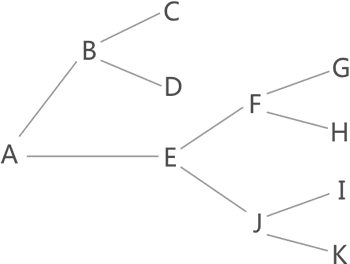

首页 > 编程笔记
回溯算法
在图 1 中找到从 A 到 K 的行走路线，一些读者会想到用穷举算法（简称穷举法），即简单粗暴地将从 A 出发的所有路线罗列出来，然后逐一筛选，最终找到正确的路线。
图 1 中，从 A 出发的路线有以下几条：
本节要讲的回溯算法和穷举法很像，它也会把所有可能的方案都查看一遍，从中找到正确答案。不同之处在于，回溯算法查看每种方案时，一旦判定其不是正确答案，会立即以“回溯”的方式试探其它方案。
所谓“回溯”，其实就是回退、倒退的意思。仍以图 1 为例，回溯算法查找从 A 到 K 路线的过程是：
回溯算法采用“回溯”（回退）的方式对所有的可行方案做出判断，并最终找到正确方案。和穷举法相比，回溯算法的查找效率往往更高，因为在已经断定当前方案不可行的情况下，回溯算法能够“悬崖勒马”，及时转向去判断其它的可行方案。
用回溯算法解决的经典问题有 N皇后问题、迷宫问题等，我们会在后续章节给大家做详细地讲解。

图 1 找从A到K的行走路线
图 1 找从A到K的行走路线
图 1 中，从 A 出发的路线有以下几条：
A-B-C
A-B-D
A-E-F-G
A-E-F-H
A-E-J-I
A-E-J-K
本节要讲的回溯算法和穷举法很像，它也会把所有可能的方案都查看一遍，从中找到正确答案。不同之处在于，回溯算法查看每种方案时，一旦判定其不是正确答案，会立即以“回溯”的方式试探其它方案。
所谓“回溯”，其实就是回退、倒退的意思。仍以图 1 为例，回溯算法查找从 A 到 K 路线的过程是：
- 从 A 出发，先选择 A-B 路线；继续从 B 出发，先选择 B-C 路线；到达 C 点后发现无路可选，表明当前路线无法达到 K 点，该算法会立刻回退到上一个节点，也就是 B 点；
- 从 B 点出发，选择 B-D 路线，达到 D 点后发现无法到达 K 点，该算法再回退到 B 点；
- 从 B 点出发已经没有新的线路可以选择，该算法再次回退到 A 点，选择新的 A-E 路线；
- 继续以同样的方式测试 A-E-F-G、A-E-F-H、A-E-J-I 这 3 条线路后，最终找到 A-E-J-K 路线。
回溯算法采用“回溯”（回退）的方式对所有的可行方案做出判断，并最终找到正确方案。和穷举法相比，回溯算法的查找效率往往更高，因为在已经断定当前方案不可行的情况下，回溯算法能够“悬崖勒马”，及时转向去判断其它的可行方案。
回溯算法的应用场景
回溯算法经常以递归的方式实现，用来解决以下 3 类问题：- 决策问题：从众多选择中找到一个可行的解决方案；
- 优化问题：从众多选择中找到一个最佳的解决方案；
- 枚举问题：找出能解决问题的所有方案。
用回溯算法解决的经典问题有 N皇后问题、迷宫问题等，我们会在后续章节给大家做详细地讲解。
关注公众号「站长严长生」，在手机上阅读所有教程，随时随地都能学习。内含一款搜索神器，免费下载全网书籍和视频。

微信扫码关注公众号